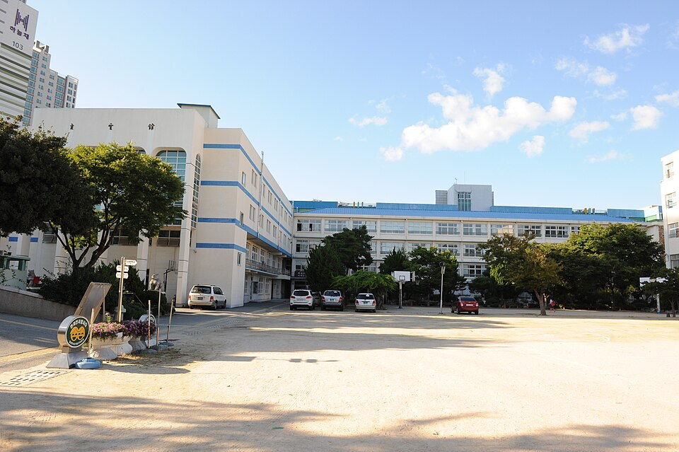
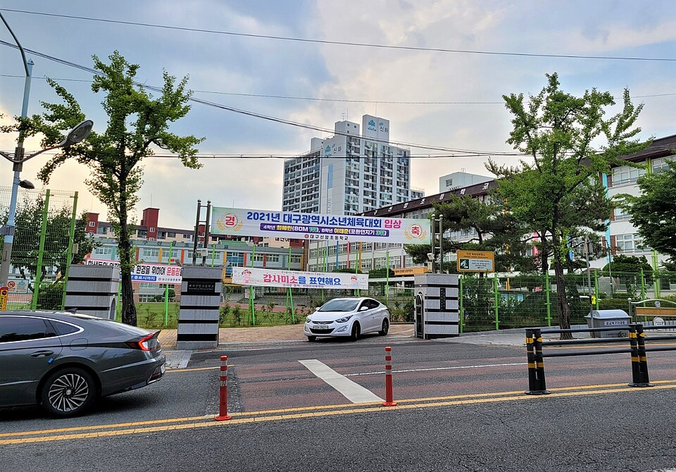

대구 북구는 침산·칠성의 구도심과 구암·동천·태전의 칠곡 신도시가 한 구에 묶인 곳입니다. 칠성동 경명여중·경명여고, 침산동 침산중·칠성고, 복현동 복현중·강북고가 구도심 쪽이고, 칠곡 쪽은 구암고·운암고·매천고가 있습니다. 학원가는 칠곡에 몰려 있어 침산·복현·산격 쪽 가정은 집으로 오는 수학과외·영어과외를 찾는 경우가 많습니다.
오늘은 대구 북구에 직접 찾아가는 선생님 중 두 분을 소개합니다. 한 분은 수학을 놓친 학생 전문, 한 분은 고교학점제 입시까지 함께 설계하는 영어 선생님입니다.
대구 북구에서 수학을 포기한 학생을 위한 수학과외를 찾는다면 이 선생님이 먼저 떠오릅니다. 본인이 체육 특기생에서 출발해 연세대 공학박사까지 간 경험이 있어서, 기초가 빈 학생의 마음을 이해하는 공감 능력이 있습니다. 초등 수학을 놓쳤든 중등 수학을 놓쳤든, 어디서 끊겼는지 찾아 그 지점부터 다시 쌓습니다.
수업은 어린이집 선생님 같은 화법으로 단계마다 하나씩 점검하며 갑니다. 필수 공식을 이해한 뒤 연관 공식으로 넓히고, 난이도별·오답별 반복 풀이로 작은 성취를 쌓아 "되는구나" 하는 자신감을 만듭니다. 매 수업 후 학부모께 리포트를 보내고 3인 카톡방으로 숙제·진도를 관리합니다. 14년 대학 교수 경력이 있어 고등 학부모님과 입시 상담도 됩니다.
최ㅇ상 선생님 상세 프로필 →고등 영어과외인데 점수만 올리는 데서 끝나지 않습니다. 고교학점제에 맞춰 학생 진로를 고려한 3개년 로드맵을 함께 짜고, 학교별 수행평가와 세특 전략까지 준비하는 입시 파트너 역할을 합니다. 경북대 이공계 출신에 미국 연구원 경험이 있어 이과 진학을 생각하는 학생과 진로 이야기가 잘 통합니다.
관리도 촘촘합니다. 매 수업 후 학부모께 리포트를 보내고, 학생·학부모·선생님 3인 카톡방에서 숙제 관리와 질문 응답을 실시간으로 합니다. 강북고·경상고처럼 수행평가 비중이 큰 학교 학생이 영어와 생기부를 같이 챙기기에 맞습니다.
이ㅇ호 선생님 상세 프로필 →
학교마다 시험 출제 경향과 수행평가 비중이 달라서, 학교별로 준비법을 따로 정리해 두었습니다.
👉 대구 북구 수학과외 선생님 · 대구 북구 영어과외 선생님 · 관리 학교 39곳 전체 보기
학년과 과목, 원하는 시간대만 알려주시면 24시간 안에 맞는 선생님을 추천해 드립니다.